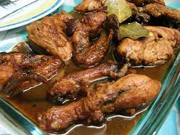

Chicken Adobo Recipe

What is Chicken Adobo?
Chicken adobo is a dish that originates from the Phillipines. It is a very savory dish that Filipinos usually pair with rice.
It draws a lot of ingridents from chinese spices and marinates like soy sauce and dark vinegar. Chicken adobo is typically made with the thigh of the bird, but can also be used with the drumstick as well.
Ingredients needed to make Chicken Adobo
- chicken breast-can sub for chicken thigh or drumstick
- soy Sauce-all purpose soy sauce should be fine
- white vinegar-plain vinegar is fine,but if you like prefer sour sub accordingly
- onions and garlic
- peppercorn
- sugar
- green onion
Cooking Steps
- Heat one tablespoon of oil in a pot,preferably a dutch oven.
- Add chicken breast and make sure to cook until browned.
- Once browned,add aromatics(garlic,onion, and peppercorn)to the same pot.
- Add the soy sauce,vinegar,and water to barely cover the chicken
- Bring the soup to a boil until chicken is fork tender.Season with sugar to acquired taste
- Serve adobo ontop of rice and top with green onions for garnish